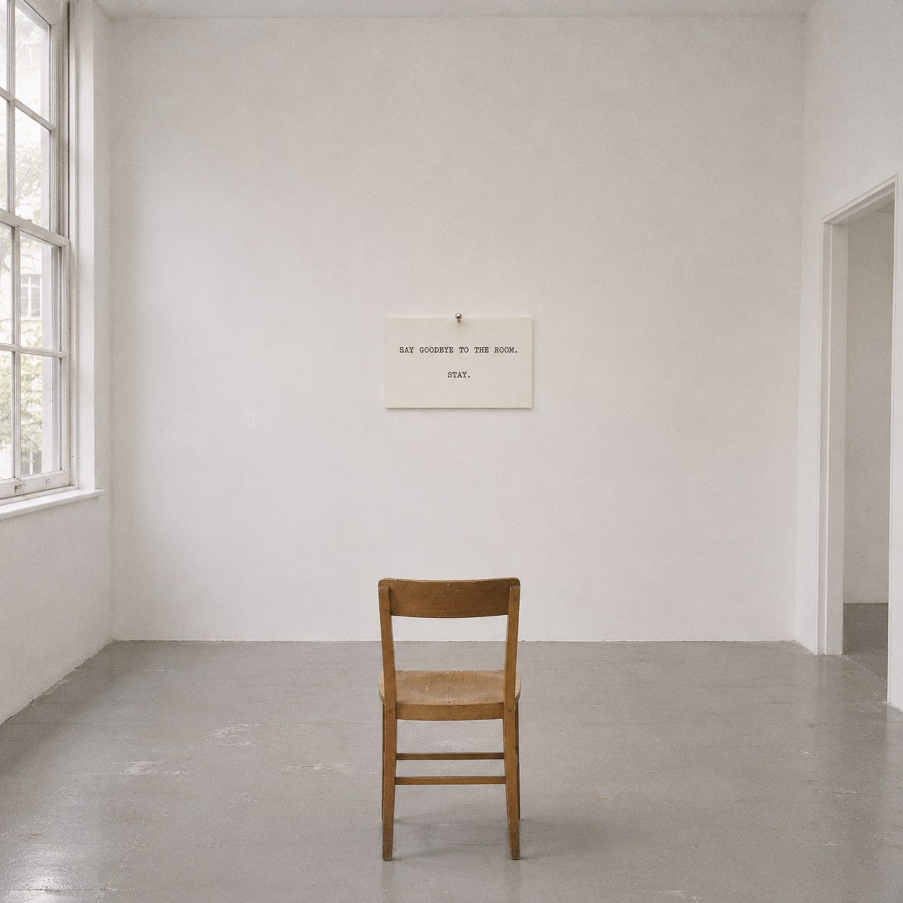
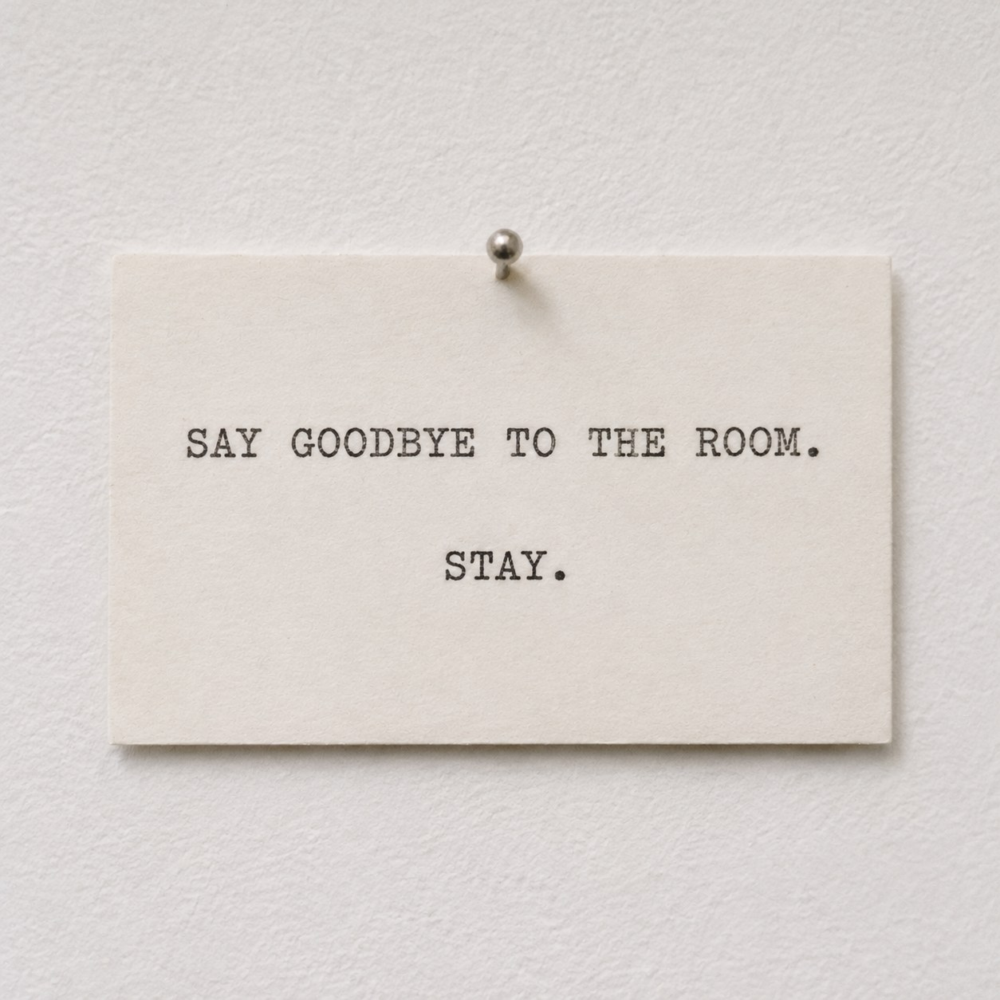

Farewell to This Room


A goodbye is meant to come at the end. You say it at the door, and then the door does the rest. The word and the leaving sit so close together that we forget they are two things.
This score pulls them apart. Say goodbye to the room. Then stay. Nothing in the room changes. The chair, the light and the window are where they were. The room has been left, and you are still in it.
What is the time after a goodbye, if you do not go? It is not the time before. Every minute now is extra, a minute past the end. You see the room the way you see a place on the last morning of a trip, a little too clearly, as if from a distance.
George Brecht wrote a score that named only ice, water and steam, and after reading it, making a cup of tea became a performance. This score does the same to every room you will ever stand in. Each one could be the last look. Each one already is, a little.
Bas Jan Ader painted a sentence on a wall, lit it with a lamp, and set flowers beside it that wilted as the show went on. His goodbye was spread so thin that no one could see it happen. Here it is said all at once, and then nothing happens for a long time.
Staying is only the slowest way to leave.